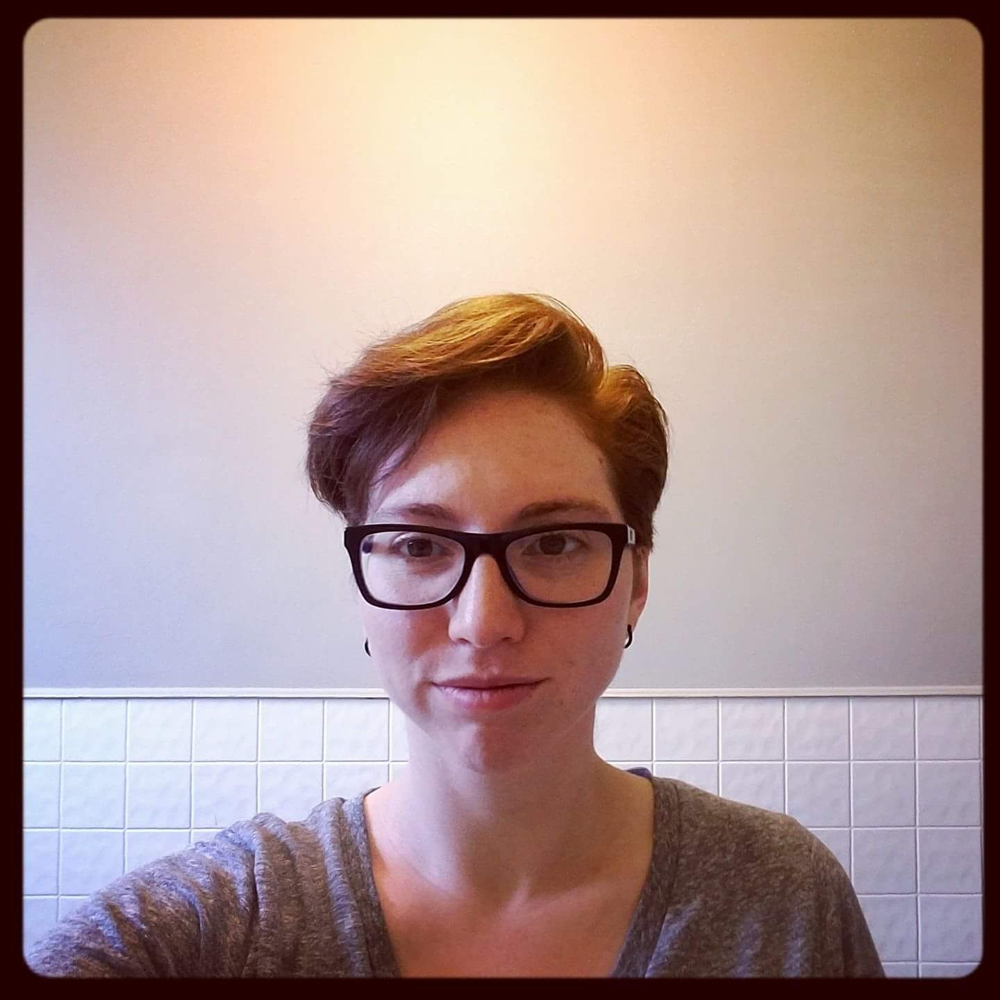

About Me
Pictured: Alyssa, after an actual haircut.
Alyssa Andres got her start making things early in life. She could often be found tinkering with something at her mother's flower shop. She considered her designs ahead of her time, her mother considered them "interesting!"
In college Alyssa found a love for history and anthropology. She enjoyed the opportunity to dig into the larger "whys" of the world.
Since graduating, Alyssa has been working full time as a middle school teacher. Through her experience in teaching she's learned to be adaptable and solve problems.